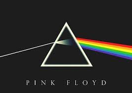

Contamos con una amplia variedad de generos musicales
Pop
Genero donde las letras se centran a menudo en el amor romántico, pero también tratan un rango amplio de otros temas con un enfoque frecuente en lo social, lo personal y lo político.
Happiness Begins
Happiness Begins es el quinto álbum de estudio de Jonas Brothers, que se lanzó el 7 de junio de 2019
X
X, es el segundo álbum de estudio del cantautor británico Ed Sheeran, lanzado mundialmente el 20 de junio de 2014.
Born to died
Born to Die, es el álbum debut de la cantante y compositora Lana Del Rey, y el primero de manera oficial.
Fine Line
Fine Line, es el segundo álbum de estudio del cantante británico Harry Styles.2 Se lanzó el 13 de diciembre de 2019 a través de Erskine y Columbia Records.
Shawn Mendes
Shawn Mendes es el tercer álbum de estudio y el primer album homónimo del cantante y compositor canadiense Shawn Mendes.
When We All Fall Asleep, Where Do We Go?
Es el álbum de estudio debut de la cantante estadounidense Billie Eilish. Está producido por su hermano Finneas O'Connell,29 de marzo de 2019.
Rock
Genero donde las canciones, se centran con compás de 4/4 y una estructura verso-estribillo; el género se ha vuelto diverso y las características musicales comunes son difíciles de definir.
Highway to Hell

Highway to Hell, es el sexto álbum de estudio de la banda de hard rock australiana AC/DC que salió a la venta en 1979.
Bleach
Bleach, es el álbum debut de la banda de grunge estadounidense Nirvana, lanzado en junio de 1989 a través del sello discográfico independiente Sub Pop.
In the utero
In Utero, es el tercer y último álbum de estudio de la banda estadounidense de grunge Nirvana, lanzado el día 21 de septiembre de 1993 por DGC Records.
The Dark Side of the Moon
The Dark Side of the Moon, es un álbum conceptual, el octavo de estudio de la banda británica de rock progresivo Pink Floyd. Fue lanzado el 1 de marzo de 1973 en los Estados Unidos.
Whitesnake
Whitesnake es el nombre del séptimo álbum de estudio de la banda británica de hard rock homónima, lanzado al mercado el 7 de abril de 1987. Este disco se conoció en Europa como 1987.
Greatest Hits
Greatest Hits es un álbum recopilatorio de la banda estadounidense de hard rock Guns N' Roses, publicado el 23 de marzo de 2004 por Geffen Records.
K-pop
Korean popular music. Género musical que incluye diversos estilos como la música dance electrónica, hip hop, rap, rock o R&B, y que se refiere específicamente a la música popular de Corea del Sur.
Love Yourself 轉 'Tear'
Love Yourself 轉 'Tear' es el tercer álbum de estudio del grupo surcoreano BTS.
Map of the Soul: 7
Map of the Soul: 7 es el cuarto álbum de estudio del grupo surcoreano BTS.
The Album
The Album es el primer álbum de estudio coreano de Blackpink y tercero en su discografía general.
Hero
Hero es el álbum de estudio japonés debut de la banda de chicos de Corea del Sur Super Junior , lanzado el 24 de julio de 2013 bajo Avex Trax en Japón.
Mixtape
Mixtape es un extended play pre-debut del grupo surcoreano de chicos Stray Kids.
Wings
Wings es el segundo álbum de estudio del grupo surcoreano BTS.